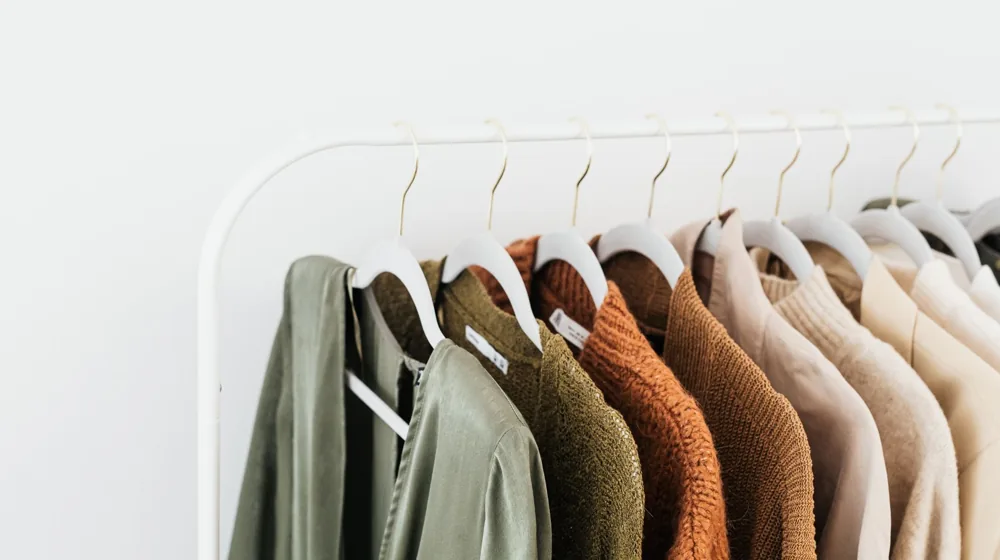
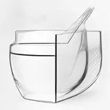

매번 입을 옷 없는 이유? 3단계 미니멀 옷장 체크리스트
사진: Ron Lach / Pexels (무료 이미지, 출처 표기)
왜 정리해도 늘 입을 옷이 없을까?

매일 아침 옷장 문을 열 때마다 "정말 입을 옷이 없다"고 느껴진다면, 옷의 개수가 부족해서가 아닙니다. 오히려 유행이 지났거나 내 몸에 맞지 않는 옷들이 시선을 가로막고 있기 때문일 확률이 높습니다. 전문가들은 입지 않는 옷이 옷장의 80%를 차지한다고 말합니다.
미니멀 옷장의 핵심은 단순히 옷을 버리는 것이 아니라, 서로 쉽게 조합할 수 있는 양질의 옷들로만 채우는 것입니다. 이를 캡슐 워드로브(Capsule Wardrobe, 소수의 기본 아이템을 조합해 다양한 스타일을 연출하는 옷장)라고 부릅니다. 이번 글을 통해 나에게 딱 맞는 미니멀 옷장을 구축하는 구체적인 실천법을 확인해 보세요.
버릴 옷과 남길 옷을 구별하는 3가지 기준
무작정 옷을 꺼내어 버리려고 하면 망설여지기 마련입니다. 감정에 치우치지 않고 객관적으로 정리할 수 있는 세 가지 명확한 기준을 제시합니다. 이 기준에 맞춰 옷을 분류해 보세요.
- 최근 1년간 한 번도 입지 않은 옷: 지난 계절에 손이 가지 않았다면 앞으로도 입을 확률은 5% 미만입니다. 과감히 정리 대상에 올려둡니다.
- 현재 체형에 맞지 않는 옷: "살 빼면 입어야지" 하고 보관해 둔 옷은 볼 때마다 스트레스만 유발합니다. 지금 내 몸을 빛내주는 옷에 집중하는 것이 좋습니다.
- 관리하기 너무 까다로운 옷: 드라이클리닝만 가능해서 방치해 두었거나, 먼지가 너무 잘 붙어 입기 꺼려지는 옷들도 정리하는 편이 일상의 피로를 줄여줍니다.
계절별 미니멀 옷장 구성을 위한 핵심 가이드
미니멀 옷장을 처음 시도할 때는 무작정 개수를 줄이기보다 상하의의 조화를 고려해야 합니다. 아래 표는 보통의 미니멀리스트들이 기본적으로 권장하는 사계절 필수 아이템 구성 예시입니다.
위 수량은 개인의 라이프스타일(직장인, 프리랜서 등)에 따라 유연하게 조절할 수 있습니다. 중요한 것은 보유한 상의와 하의가 서로 어색하지 않게 잘 어울려야 한다는 점입니다.
미니멀 옷장을 유지하는 '1 In 1 Out' 실천법
어렵게 정리를 끝냈더라도 관리하지 않으면 금방 원래 상태로 돌아갑니다. 옷장의 균형을 유지하기 위한 가장 확실한 방법은 1 In 1 Out(원인 원아웃) 규칙을 적용하는 것입니다. 새로운 옷을 한 벌 사면, 기존에 있던 옷 한 벌을 반드시 기부하거나 버리는 방식입니다.
이 규칙을 습관화하면 구매 단계에서부터 한 번 더 고민하게 됩니다. '이 새 옷이 내 옷장의 기존 옷을 대체할 만큼 매력적인가?'라는 질문을 스스로에게 던지게 되면서 충동구매를 자연스럽게 예방할 수 있습니다.
실패 없는 옷 정리를 위한 주의사항
하루 만에 옷장을 완전히 비우겠다는 과도한 열정은 오히려 독이 될 수 있습니다. 급하게 다 버렸다가 막상 계절이 바뀔 때 입을 옷이 없어 다시 대량으로 구매하는 악순환에 빠질 수 있기 때문입니다.
가장 좋은 방법은 일주일 동안 '보류 상자'를 만들어 두는 것입니다. 버릴지 말지 애매한 옷들은 상자에 따로 담아 보이지 않는 곳에 보관해 봅니다. 일주일 동안 그 상자에서 옷을 다시 꺼내 입지 않았다면, 비로소 마음 편히 처분해도 괜찮습니다. 의류 수거함에 기부하거나 헌 옷 수거 업체를 이용해 정리하는 것을 권장합니다.
🔗 이 글도 함께 보면 좋아요: 집들이 요리 메뉴 추천: 실패 없는 4단계 맞춤 식단 짜기
관련 추천 상품
이 포스팅은 쿠팡 파트너스 활동의 일환으로, 이에 따른 일정액의 수수료를 제공받습니다.
한눈에 보는 상품 목록

논슬립 옷걸이
패브릭 수납함